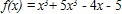
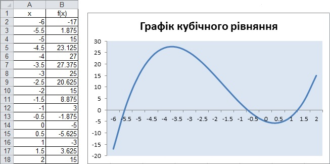
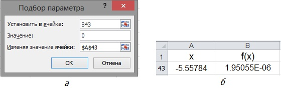

Практична робота 6.2
Потрібно розв'язати кубічне рівняння
Хід виконання
Як відомо, кубічне рівняння може мати від одного до трьох коренів. Якщо розглянути функцію  і зауважити, що f(-10) = -465 (велике від'ємне число), а f(10)=1455 (велике додатне число), то цілком імовірно, що всі три корені містяться на відрізку х є [-10; 10]. Щоб перевірити це припущення, потрібно обчислити значення функції на зазначеному відрізку з невеликим кроком та побудувати її графік. Після цього стане зрозуміло, скільки коренів має рівняння та в яких приблизно точках – тоді зручніше буде застосовувати засіб Підбір параметра.
- Створіть нову електронну книгу та збережіть її у файлі під іменем Пpaкт_6_2.xlsx.
- Для визначення наближених значень коренів рівняння обчисліть значення функції на відрізку х є [-10; 10].
- Заповніть діапазон А2:А41 значеннями арифметичної прогресії з першим членом -10 і кроком 0,5.
- У клітинку В2 введіть формулу цільової функції =А2^3+ 5*А2^2-4*А2-5 і скопіюйте її у клітинки ВЗ:В41.
- Побудуйте графік цільової функції на відрізку [-6; 2] за допомогою майстра діаграм (рис. 6.18, б).

Рис. 6.18. Визначення наближених значень коренів рівняння: a – таблиця значень функції на відрізку [-6;2]; б – графік цільової функції - З графіка видно, що корені рівняння містяться приблизно в точках -5,5; -0,7 та 1,2. Визначте ці корені більш точно за допомогою засобу Підбір параметра.
- Скопіюйте клітинку В42 у клітинки В43:В45 – це будуть цільові клітинки (а значення коренів ви будете шукати у клітинках А43:А45).
- Уведіть наближене значення першого кореня, -5,5, у клітинку А43.
- Виконайте команду Дані
 Робота з даними Підбір параметра. Заповніть поля у вікні Підбір параметра так, як показано на рис. 6.19, а.
Робота з даними Підбір параметра. Заповніть поля у вікні Підбір параметра так, як показано на рис. 6.19, а. - Клацніть кнопку ОК. У клітинці А43 буде виведено майже точне значення першого кореня, а в клітинці В43 – значення 1,95055Е-06 (рис. 6.19, б). Це дуже близьке до нуля число, подане в експоненційній формі. Щоб відобразити його у більш звичному вигляді, виділіть цю клітинку і на панелі інструментів Форматування клацніть кнопку (Формат із розділювачами). У результаті ви побачите в клітинці значення 0.

Рис. 6.19. Обчислення першого кореня: а – вікно Підбір параметра; б – результат підбору параметра
- Скориставшись засобом Підбір параметра, самостійно знайдіть два інших корені рівняння у клітинках А44 та А45. Збережіть електронну книгу.